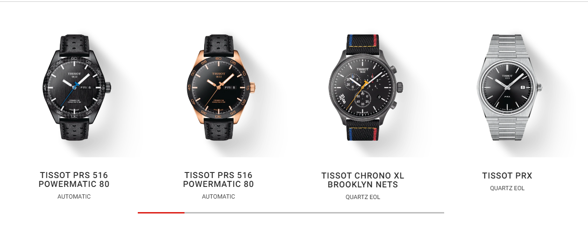
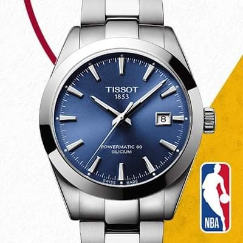
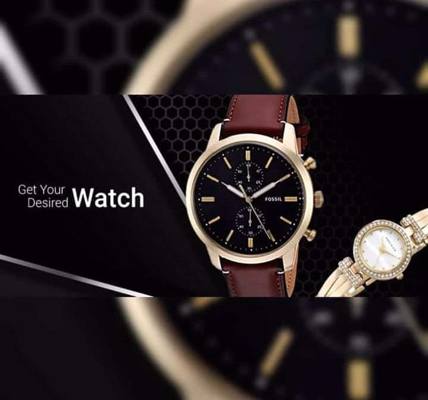
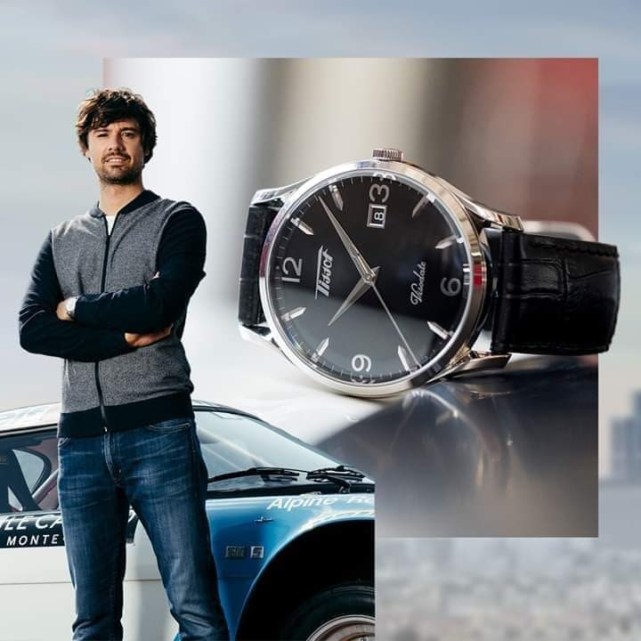
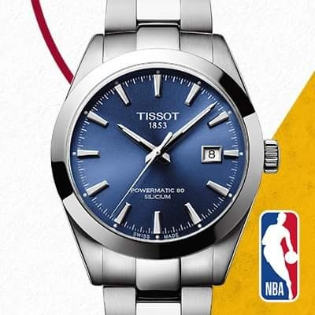
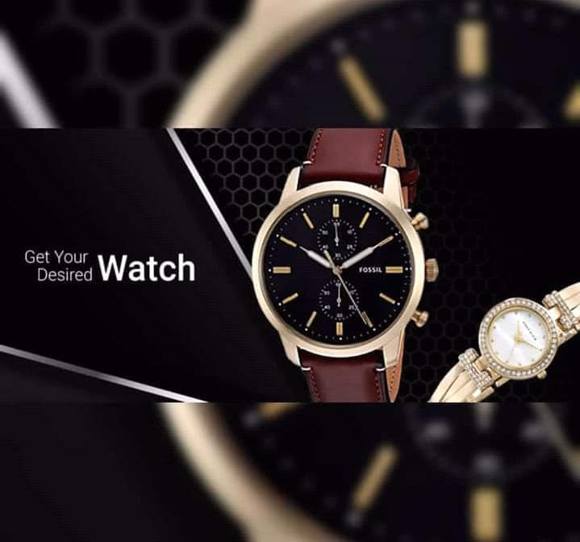
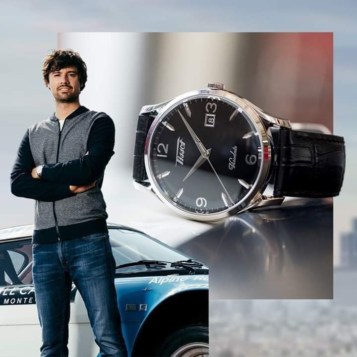

15 major watch manufacturers and jewelers in Switzerland. Tissot and seven other manufacturers, including Omega, Rolex and Longines, were given the lowest environmental rating as "Latecomers/Non-transparent", suggesting that the manufacturer has taken very few actions to address the impact of its manufacturing activities on the environment and the climate.
There are concerns over the lack of transparency in manufacturing activities and the sourcing of precious raw materials such as gold, which is a major cause of environmental issues such as pollution, soil degradation and deforestation.The situation is especially serious in the developing countries which are top producers of gold, including China, Russia and South Africa.It is estimated that the watch and jewelry sector uses over 50% of world's annual gold production (over 2,000 tons), but in most cases the watch companies are unable or unwilling to demonstrate where their raw materials come from, and if the material suppliers use eco-friendly technologies.

 




